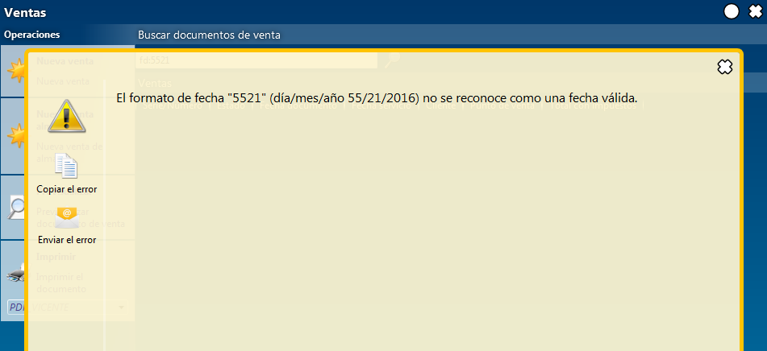
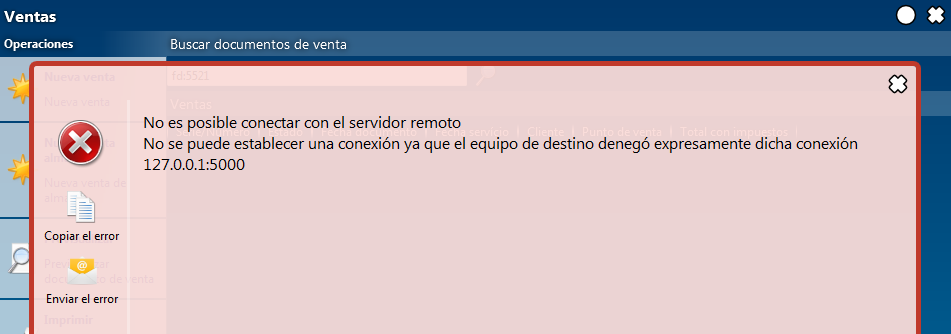
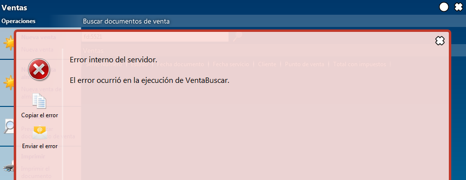
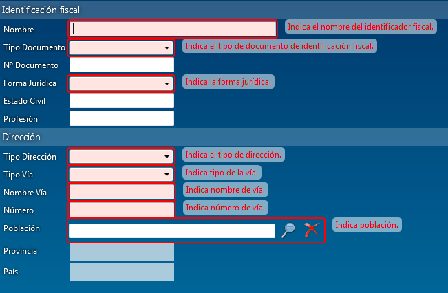

Errores¶
Errores en el procesamiento¶
Todos los errores se presentan como un texto encima de la pantalla en que ocurrió el error.
Aunque una pantalla presenta un error es posible trabajar con otra pantalla, ej. para revisar el dato indicado en el error.
Si la aplicación indica un error la base de datos NO ha cambiado. Existen unas contadas excepciones, ej. si falla la facturación del mes, un proceso largo, todas las facturas ya emitidas se quedan.
Winfra distingue dos niveles de fallos: avisos y errores.
Avisos para el usuario¶

Avisa que winfra no puede seguir por razones
de alguna regla interna - no se pueden eliminar almacenes con movimientos
o por un error de usuario - fecha inexistente
En ambos casos es el usuario que puede/debe resolver el problema.
Errores de fallos de conexión¶

Los fallos de conexión pueden ser causados por des-conexión de los cables, fallos de Internet, o fallo del propio servidor de winfra. Para resolver problema de conexión hay que revisar la conexión, cerrar el error y volver a intentarlo. Winfra recupera fallos de conexión sin tener que salir de la pantalla y perder los cambios.
Errores internos de winfra¶

En caso de que ocurre un error interno hay que avisar el equipo de winfra.
Utiliza los botones de Copiar el error o directamente Enviar el error para preparar un correo electrónico con el error.
Errores de validación¶

Las pantallas suelen indicar los campos obligatorios para anticiparse a los errores en el proceso de guardar.
No toda la validación es posible en la pantalla, sirve solo como ayuda visual para usuario. El servidor de la aplicación siempre vuelve a validar los datos.